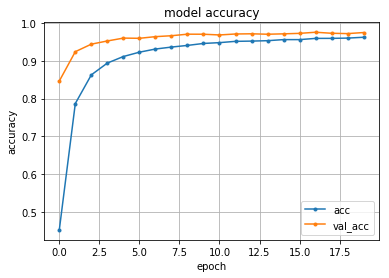

信号認識
Dataset
!wget http://benchmark.ini.rub.de/Dataset/GTSRB_Final_Training_Images.zip
!unzip GTSRB_Final_Training_Images.zip
OpenCVのパッケージをいれる
!apt-get update !apt-get -y install python-opencv
Model
1 2 3 4 5 6 7 8 9 10 11 12 13 14 15 16 17 18 19 20 21 22 23 24 25 26 27 28 29 30 31 32 33 34 35 36 37 38 39 40 41 42 43 44 45 46 47 48 49 50 51 52 53 54 55 56 57 58 59 60 61 62 63 64 65 66 67 68 69 70 71 72 73 74 75 76 77 78 79 80 81 82 83 84 85 86 87 | from __future__ import print_function import keras from keras.datasets import mnist from keras.models import Sequential from keras.layers import Dense, Dropout, Flatten from keras.layers import Conv2D, MaxPooling2D from keras import backend as K import cv2 import csv from matplotlib import pyplot as plt import random import numpy as np from sklearn.utils import shuffle from sklearn.model_selection import train_test_split from keras.optimizers import Adam batch_size = 128 num_classes = 42 epochs = 20 rows, cols = 25, 25 labels = [] features = [] for i in range(42): logs = [] if i < 10: file_path = 'GTSRB/Final_Training/Images/0000' + str(i) file_name = file_path + '/GT-0000' + str(i) + '.csv' elif i < 100: file_path = 'GTSRB/Final_Training/Images/000' + str(i) file_name = file_path + '/GT-000' + str(i) + '.csv' with open(file_name,'rt') as file: reader = csv.reader(file, delimiter=";", doublequote=True, lineterminator="\r\n", quotechar='"', skipinitialspace=True) for line in reader: logs.append(line) log_labels = logs.pop(0) for i in range(len(logs)): img_name = logs[i][0] img_path = file_path + '/' + img_name img = plt.imread(img_path) resized = cv2.resize((cv2.cvtColor(img, cv2.COLOR_RGB2XYZ))[:,:,1],(cols,rows)) features.append(resized) labels.append(int(logs[i][7])) features = np.array(features).astype('float32') labels = np.array(labels).astype('float32') features = np.append(features,features[:,:,::-1],axis=0) labels = np.append(labels,-labels,axis=0) features, labels = shuffle(features, labels) train_features, test_features, train_labels, test_labels = train_test_split(features, labels, random_state=0, test_size=0.1) #reshape the data to feed into the network train_features = train_features.reshape(train_features.shape[0], rows, cols, 1) test_features = test_features.reshape(test_features.shape[0], rows, cols, 1) train_labels = keras.utils.to_categorical(train_labels, num_classes) test_labels = keras.utils.to_categorical(test_labels, num_classes) model = Sequential() model.add(Conv2D(32, kernel_size=(3, 3), activation='relu', input_shape=(rows, cols, 1))) model.add(Conv2D(64, (3, 3), activation='relu')) model.add(MaxPooling2D(pool_size=(2, 2))) model.add(Dropout(0.25)) model.add(Flatten()) model.add(Dense(128, activation='relu')) model.add(Dropout(0.5)) model.add(Dense(num_classes, activation='softmax')) model.summary() model.compile(loss=keras.losses.categorical_crossentropy, optimizer=keras.optimizers.Adadelta(), metrics=['accuracy']) history = model.fit(train_features, train_labels, batch_size=batch_size, epochs=epochs, verbose=1, validation_data=(test_features, test_labels)) |
結果
1 2 3 4 5 6 7 8 9 10 11 12 13 14 15 16 17 18 19 20 21 22 23 24 25 26 27 28 29 30 31 32 33 34 35 36 37 38 39 40 41 | Train on 70144 samples, validate on 7794 samples Epoch 1/20 70144/70144 [==============================] - 121s 2ms/step - loss: 2.4245 - acc: 0.4524 - val_loss: 0.6344 - val_acc: 0.8467 Epoch 2/20 70144/70144 [==============================] - 112s 2ms/step - loss: 0.7349 - acc: 0.7871 - val_loss: 0.2587 - val_acc: 0.9244 Epoch 3/20 70144/70144 [==============================] - 110s 2ms/step - loss: 0.4527 - acc: 0.8630 - val_loss: 0.2018 - val_acc: 0.9443 Epoch 4/20 70144/70144 [==============================] - 111s 2ms/step - loss: 0.3452 - acc: 0.8942 - val_loss: 0.1557 - val_acc: 0.9528 Epoch 5/20 70144/70144 [==============================] - 115s 2ms/step - loss: 0.2877 - acc: 0.9116 - val_loss: 0.1373 - val_acc: 0.9604 Epoch 6/20 70144/70144 [==============================] - 110s 2ms/step - loss: 0.2498 - acc: 0.9231 - val_loss: 0.1341 - val_acc: 0.9598 Epoch 7/20 70144/70144 [==============================] - 114s 2ms/step - loss: 0.2223 - acc: 0.9314 - val_loss: 0.1230 - val_acc: 0.9642 Epoch 8/20 70144/70144 [==============================] - 119s 2ms/step - loss: 0.2062 - acc: 0.9366 - val_loss: 0.1095 - val_acc: 0.9666 Epoch 9/20 70144/70144 [==============================] - 119s 2ms/step - loss: 0.1904 - acc: 0.9410 - val_loss: 0.1064 - val_acc: 0.9707 Epoch 10/20 70144/70144 [==============================] - 115s 2ms/step - loss: 0.1743 - acc: 0.9462 - val_loss: 0.1030 - val_acc: 0.9706 Epoch 11/20 70144/70144 [==============================] - 108s 2ms/step - loss: 0.1677 - acc: 0.9483 - val_loss: 0.1135 - val_acc: 0.9687 Epoch 12/20 70144/70144 [==============================] - 111s 2ms/step - loss: 0.1562 - acc: 0.9518 - val_loss: 0.1033 - val_acc: 0.9713 Epoch 13/20 70144/70144 [==============================] - 112s 2ms/step - loss: 0.1540 - acc: 0.9524 - val_loss: 0.1031 - val_acc: 0.9718 Epoch 14/20 70144/70144 [==============================] - 108s 2ms/step - loss: 0.1495 - acc: 0.9535 - val_loss: 0.1079 - val_acc: 0.9706 Epoch 15/20 70144/70144 [==============================] - 107s 2ms/step - loss: 0.1426 - acc: 0.9564 - val_loss: 0.1010 - val_acc: 0.9716 Epoch 16/20 70144/70144 [==============================] - 107s 2ms/step - loss: 0.1414 - acc: 0.9563 - val_loss: 0.1018 - val_acc: 0.9729 Epoch 17/20 70144/70144 [==============================] - 111s 2ms/step - loss: 0.1320 - acc: 0.9596 - val_loss: 0.0968 - val_acc: 0.9759 Epoch 18/20 70144/70144 [==============================] - 108s 2ms/step - loss: 0.1318 - acc: 0.9597 - val_loss: 0.1028 - val_acc: 0.9732 Epoch 19/20 70144/70144 [==============================] - 109s 2ms/step - loss: 0.1304 - acc: 0.9604 - val_loss: 0.1061 - val_acc: 0.9723 Epoch 20/20 70144/70144 [==============================] - 110s 2ms/step - loss: 0.1252 - acc: 0.9626 - val_loss: 0.1021 - val_acc: 0.9751 |
モデルの可視化
1 2 3 | from keras.utils import plot_model ... plot_model(model, to_file='model.png') |
apt-get install graphviz pip install pydot pip install pydot-ng
グラフ
1 2 3 4 5 6 7 8 9 10 11 | from matplotlib import pyplot as plt # 精度のplot plt.plot(history.history['acc'], marker='.', label='acc') plt.plot(history.history['val_acc'], marker='.', label='val_acc') plt.title('model accuracy') plt.grid() plt.xlabel('epoch') plt.ylabel('accuracy') plt.legend(loc='best') plt.show() |

評価
1 2 3 | score = model.evaluate(test_features, test_labels, verbose=0) print('Test loss:', score[0]) print('Test accuracy:', score[1]) |
1 2 | Test loss: 0.10212556134359667 Test accuracy: 0.9751090582652309 |